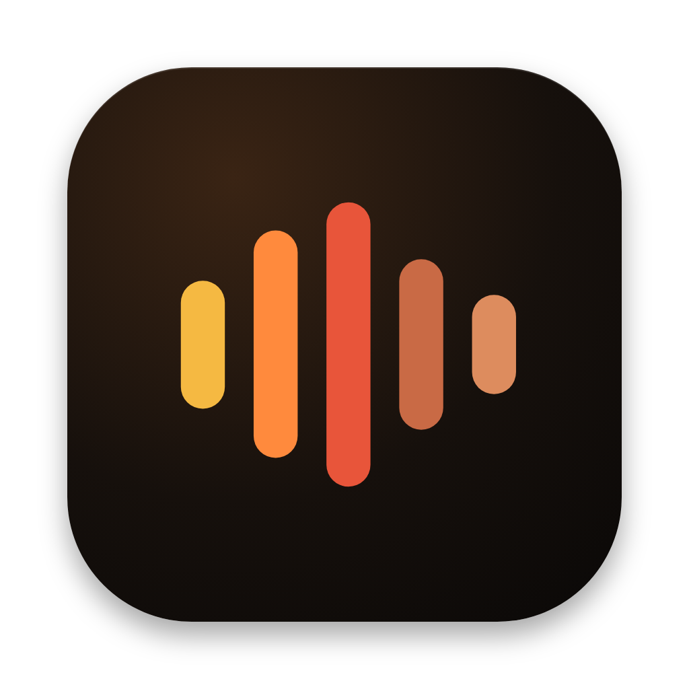
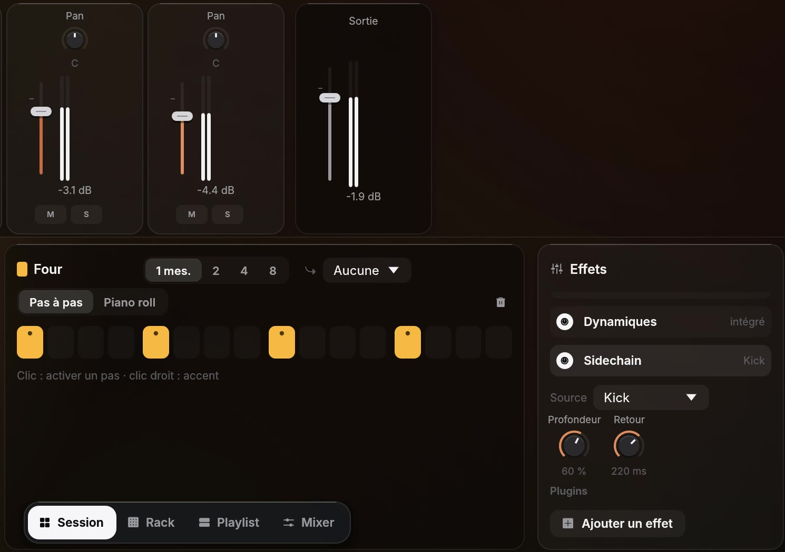
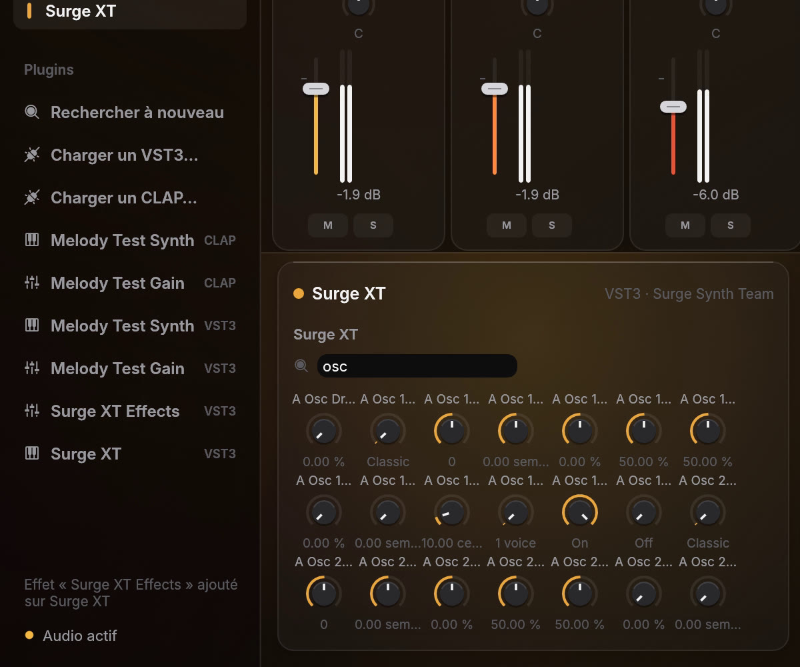
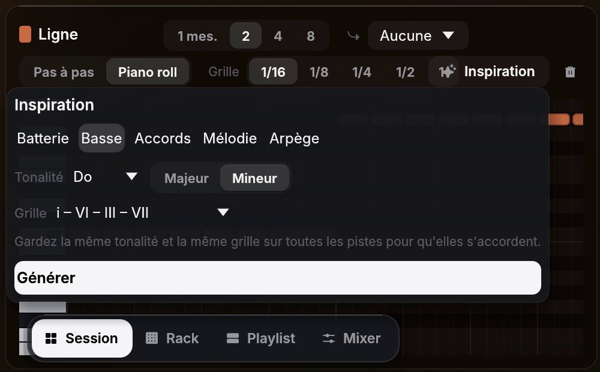
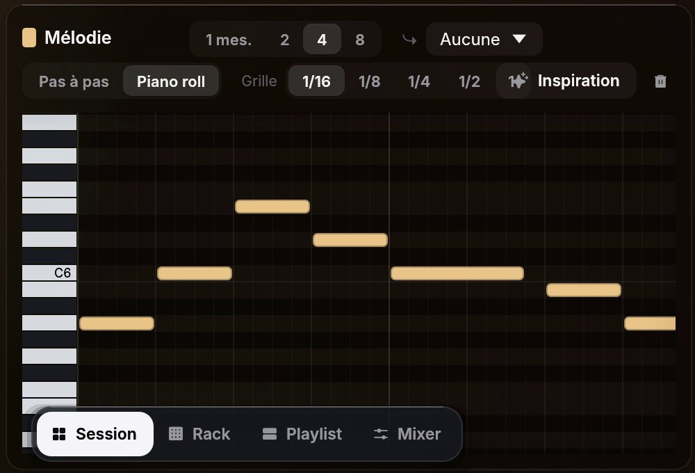
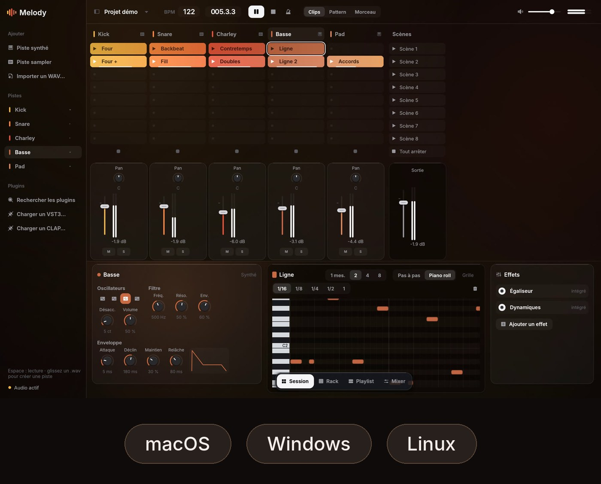

Pensé
pour le live.
Lancez vos clips, enchaînez les scènes, improvisez.


Votre nouveau studio.
Télécharger pour Mac Télécharger pour Windows Télécharger pour LinuxAussi pour Mac, Windows et Linux
À faire une seule fois : ensuite, Melody s'ouvre normalement.

Lancez vos clips, enchaînez les scènes, improvisez.
Construisez vos morceaux, section par section.

Vos beats prennent forme en quelques clics.

Une console complète sur chaque piste.

Votre clavier ou votre contrôleur MIDI, directement dans vos clips.

Sidechain intégré, sur n'importe quelle piste.

Automatisez n'importe quel réglage, plugins compris.

Vos instruments et effets VST3 et CLAP préférés, et des plugins gratuits à installer en un clic.

Une batterie, une basse, des accords ou une mélodie, générés dans votre tonalité.

Melody transforme un enregistrement en notes MIDI.

Le même studio, sur votre ordinateur.
